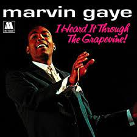

-
1959: Berry Gordy Receives $800 Loan
In 1958, after leasing the first two Miracles singles, including “Got A Job” (a riposte to the Silhouettes’ No. 1 hit, “Get A Job”), to End Records in New York, Berry Gordy receives a royalty check for just $3.19. This motivates him to form his own company in Detroit, facilitated by an $800 loan from the Gordy family’s savings fund.
-
1960: Marvin Gaye Signs To Motown
Marvin Gaye, a member of top-rated, Chicago-based doowop group the Moonglows, moves to Detroit when the group splits up. Its leader, Harvey Fuqua, brings him to Motown, where he signs in 1960. Later, Fuqua marries Gwen Gordy, Berry Gordy’s sister.
-
1961: The Supremes Sign To Motown
In late 1960, the determined Primettes persistently hang around Hitsville, doing handclaps and background vocals, then cut a couple of songs with Smokey. In January, they are signed and acquire a new name, the Supremes. Two months later, “I Want A Guy” is released.
-
1961: Motown Signs Little Stevie Wonder
After nine months of development, newly dubbed Little Stevie Wonder makes his recording debut on the Tamla label. “I Call It Pretty Music But The Old Folks Call It The Blues,” which prominently features the young musician on harmonica as well as vocals, is produced and co-written by Clarence Paul, who becomes Stevie’s mentor at Motown..
-
1961: Motown Signs The Temptations
Motown signs the Temptations in May 1961, and they begin working with Artists & Repertoire (A&R) head William ‘Mickey’ Stevenson. With group member Otis Williams, he writes the group’s first 45, “Oh Mother Of Mine,” producing it with Andre Williams.
-
1962: First Top Single For Gordy Label
Motown prospers in the first half of 1962 with a major Mary Wells hit, but the boss still finds time to write songs as well as handle business. It takes Berry Gordy two hours to create “Do You Love Me,” which lyrically addresses his onetime lack of sex appeal – because he couldn’t dance. He cuts the track at Hitsville, adding his own vocal as a demo.

-
1963: Motown Signs The Four Tops
After signing contracts in the spring of ’63, the quartet begins recording material intended for an album release on the Workshop Jazz label. Motown A&R head Mickey Stevenson, who co-produces the sessions, subsequently says, “No one in Detroit could out sing the Four Tops.” But the album is not released, and the group begins working on songs aimed at the pop market.
-
1967: Gladys Knight and The Pips Join Motown
The first successful version of this most celebrated Motown song belongs to Gladys Knight & the Pips, owners of several hits before they join the company. The quartet takes a vote. “The guys voted to sign,” Gladys says years later. “I voted ‘no.’ I got out-voted.”
-
1968: Motown Take Half Of Top 10
Through The Grapevine,” recorded with co-writer/producer Norman Whitfield the previous year, but unreleased until August ’68. The single spends a total of seven weeks at No. 1, including the first four weeks of 1968.
I Heard It Through The Grapevine,” “Love Child” and Stevie Wonder’s “For Once In My Life” occupy the Top 3 of the Billboard Hot 100 for three consecutive December weeks. In the last week of 1968, another two Motown hits join them in the Top 10: “I’m Gonna Make You Love Me” by Diana Ross & the Supremes & the Temptations, and “Cloud Nine” by the Temptations. Meanwhile, the company has nine albums in the Top 100 of the album charts.
-
1969: Marvin Sits On The Top Spot
“I Heard It Through The Grapevine” is written by Norman Whitfield and Barrett Strong, and Whitfield records it for the first time in 1966, with the Miracles. He cuts the song again in 1967 with Marvin Gaye, Gladys Knight & the Pips, and Bobby Taylor & the Vancouvers. The second of these, when released in September, is a major hit, only held out from No. 1 by the Monkees’ “Daydream Believer” and then the Beatles’ “Hello Goodbye.”
Marvin’s “I Heard It Through The Grapevine” stays unreleased until August 1968, when it is added to his album In The Groove. Radio airplay forces Motown to ship the track as a 45 in November. After it reaches No. 1, In The Groove is given a new title: I Heard It Through The Grapevine.
 -
1969: The Jackson 5 Are Unveiled
After recording in Detroit with Bobby Taylor, the Jackson 5 relocate to Los Angeles and work begins on their debut single release for Motown, “I Want You Back.” The song is created by “The Corporation,” which comprises Berry Gordy, Deke Richards, Fonce Mizell and Freddie Perren.
The Jackson 5 are showcased August 11 for music industry tastemakers at a Beverly Hills club called The Daisy. Diana Ross welcomes the group and Michael Jackson, “their sensational eight-year-old lead singer.” (He is actually ten.) “I Want You Back” is released in October.